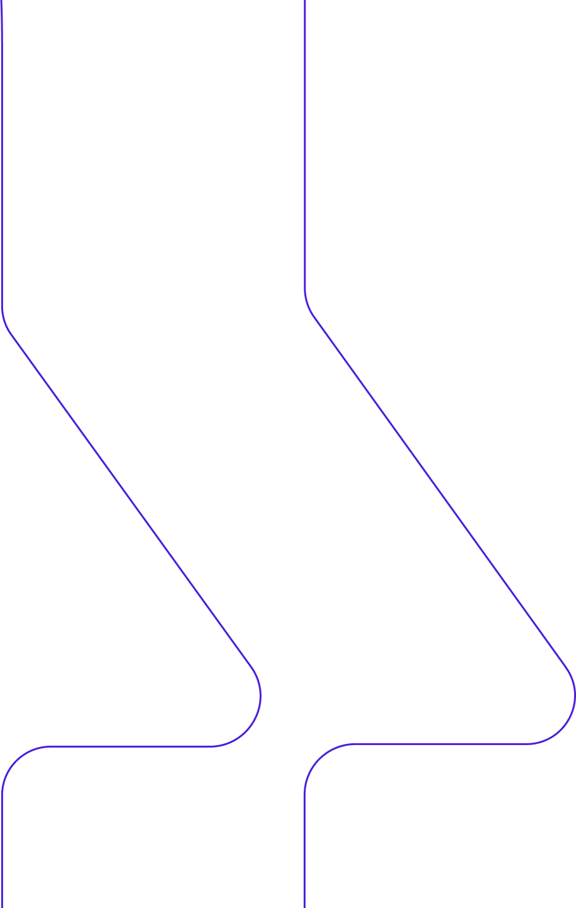
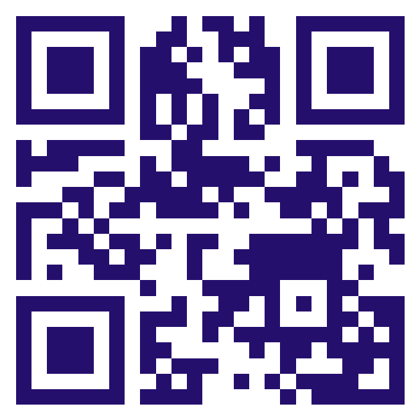
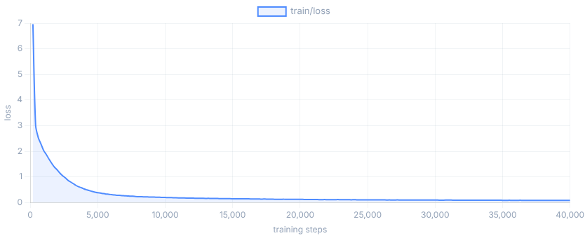
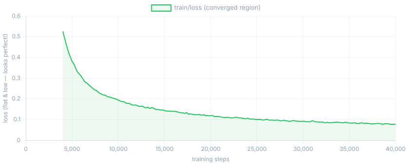

Robot learning, mani in pasta
Da LeRobot
ai Robot Veri
Quello che non ti dicono su come far afferrare le cose a un braccio robotico
Stefano Maestri
Software Engineer & Smanettone di Robotica

Cosa Aspettarsi in 30 Minuti

Cosa Aspettarsi in 30 Minuti
Quattro atti, un braccio robotico economico e tanto debugging
Hardware LeRobot + SO101, assemblaggio, telecamere e pipeline di registrazione.
Cinque bug reali: policy su CPU, action chunking, causal confounding, deriva di calibrazione, distribution shift.
Profiling, diagnostica, gli strumenti che abbiamo costruito e le metriche di training che contano davvero.
Cosa ha funzionato, cosa no, e la via più semplice con Cyberwave.
Il Setup
LeRobot, un braccio SO101 e un compito ingannevolmente semplice
LeRobot + SO101
Lo stack: una libreria open-source e un braccio da 300 €
- Libreria di robotica open-source in PyTorch di HuggingFace
- Dataset, policy pre-addestrate, strumenti di training e valutazione
- CLI: lerobot-record, -train, -rollout
- Si integra con l'HF Hub per la condivisione
- Coppia di bracci leader–follower a 6 gradi di libertà
- Struttura stampata in 3D + servi STS3215
- Budget: ~300 € totali
- Design hardware open-source
"Afferra il blocco rosso e mettilo nella scatola."
Sembra semplice. Non lo era.
La Promessa
Cosa diceva internet che sarebbe stato il robot learning
YouTube: robot che piegano il bucato, cucinano uova, smistano scatole in magazzino.
Paper: "una pipeline di training lineare."
README di LeRobot: "semplice, accessibile, allo stato dell'arte."
- Venerdì sera — spacchetta e assembla
- Sabato — registra i dati e addestra
- Domenica mattina — deploy e demo
- Domenica a pranzo — fatto!
Il Viaggio dell'Hardware
Sorprese di assemblaggio a cui nessun tutorial ti prepara

Il Viaggio dell'Hardware
Sorprese di assemblaggio a cui nessun tutorial ti prepara

Il Viaggio dell'Hardware
Sorprese di assemblaggio a cui nessun tutorial ti prepara

Il Viaggio dell'Hardware
Sorprese di assemblaggio a cui nessun tutorial ti prepara
Una staffa della spalla stampata in 3D aveva un difetto di adesione tra gli strati e si bloccava sotto carico. Ristampata con riempimento maggiore.
I servi sono arrivati con versioni di firmware diverse. Ogni motore ha dovuto essere riflashato alla stessa versione per funzionare insieme.
Lo strumento di debug FD per il firmware STS3215 gira solo su Windows. Utenti Linux: trovatevi una VM.
Si Muove!
Il braccio leader si muove. Il follower segue.
Muovi il polso e una macchina a quindici centimetri ti rispecchia in tempo reale. È, davvero, magico.
- I movimenti sono a scatti — alcuni servi restano indietro
- Le telecamere USB si disconnettono a caso dopo 10 minuti
- Il software di registrazione crasha su Wayland
- L'uscita video fa crollare gli FPS della telecamera da 30 a 8
Benvenuti nel Linux embedded.
La Pipeline Software
Sembra lineare. Ci girerai dentro decine di volte.
Setup Telecamere & Topologia USB
Tre telecamere, un bus condiviso, banda insufficiente
| Telecamera | Posizione | Risoluzione |
|---|---|---|
| front | Vista dall'alto | 640×480 @ 30 Hz |
| right | Angolo laterale | 640×480 @ 30 Hz |
| wrist | Montata sul gripper | 640×480 @ 30 Hz |
Tutte e 3 le telecamere sul Bus USB 2.0 001 condividono 480 Mbps. Tre stream raw richiedono ~830 Mbps.
Pipeline di Registrazione
Quando Wayland rompe in silenzio i comandi da tastiera
Wayland blocca lo snooping globale della tastiera. Il listener di pynput fallisce in silenzio — niente comandi con le frecce durante la registrazione, e nessun errore.
- Prompt stdin [Y/n/q] tra un episodio e l'altro
- SIGQUIT (Ctrl+\) termina un episodio in anticipo
- Zero nuovi thread
- Pynput funziona solo su X… e Wayland è in giro da un po'
# attiva la modalità interattiva lerobot-record \ --robot.type=so101_follower \ --dataset.reset_time_s=-1 \ --dataset.single_task="Grab the red block" # tra un episodio e l'altro [INTERACTIVE RESET] Episode 3 recorded. Keep scene and record next? [Y/n/q]: y # durante la registrazione # premi Ctrl+\ per terminare l'episodio [INTERACTIVE] Episode end requested via SIGQUIT
Registrazione degli Episodi
50 tentativi per afferrare un blocco rosso
- Controlla le telecamere — le porte USB si rimescolano ad ogni riavvio. /dev/video0 ora è video4. Perché? Nessuno lo sa.
- Controlla gli FPS — troppo lenti con un display collegato. Esegui in headless.
- Controlla la registrazione — stai catturando azione E osservazione? Entrambe le telecamere? Davvero scritto su disco?
- Esegui la presa — 15 secondi di teleoperazione attenta.
- Verifica l'episodio — riproduci i dati. Erano puliti?
…poi rifallo altre 49 volte.
La Sfilata dei Bug
Cinque bug che non hanno mai stampato un solo messaggio di errore
I Bug Che Non Compaiono nei Tutorial
Nessun errore. Nessun warning. Solo un robot che non funziona.
Sintomo: GPU al 2%. Il training "funziona", la policy è spazzatura.
Soluzione: policy.to("cuda") esplicitamente; controlla il device dei parametri.
Sintomo: Perfetto in replay, fallisce sul robot reale.
Soluzione: Togli il braccio leader dall'inquadratura.
Sintomo: Funziona alle 10, fallisce alle 15. Stesso codice.
Soluzione: Registra con diverse condizioni di luce; abilita la color augmentation.
"Basta Addestrare e Fare Deploy"
Loss 0.008. Sembra ottima. Manca il bersaglio ogni volta.
Policy ACT. 1 ora su GPU. Loss 0.008. Sembra ottima.
Il robot va verso il blocco… e manca. Non a caso — sistematicamente, sempre 6–7 cm a destra.
Forse il modello non è abbastanza grande? Provo ACT → manca. Provo Pi0.5 → manca. Provo SmolVLA → manca.
Il Panorama delle Policy
Scegliere il modello giusto per un setup economico da 16 GB
80M parametri · specialista
chunk_size=100, n_action_steps=100
500M parametri · condizionata dal linguaggio
Prompt testuale + encoder visivo.
3B parametri · foundation model
chunk_size=50, backbone pre-addestrata.
Bug #2
Confusione sull'Action Chunking
Quando "GPU inattiva il 90% del tempo" è in realtà corretto
chunk_size = 100, n_action_steps = 100
1 forward pass = 100 azioni = 3,3 s di movimento a 30 Hz. La GPU gira una volta, poi riproduce le azioni in cache.
I warning sporadici "running slower than requested fps" sono jitter temporale — non un bug.
Bug #3
Causal Confounding
La policy ha imparato a barare
Bug #3
Causal Confounding
La policy ha imparato a barare
Il braccio leader era visibile nell'inquadratura durante la registrazione. La policy ha imparato una scorciatoia: seguire il braccio leader, non il blocco.
Il braccio leader non c'è più. La policy vede una scena sconosciuta e produce movimenti casuali ed erratici.
Riposiziona le telecamere così il braccio leader non sia mai inquadrato. Poi ri-registra l'intero dataset.
La Risposta
Uno script di 40 righe ha trovato in 3 secondi ciò che non avevo trovato in 2 settimane
Bug #4 · Momento eureka
Deriva di Calibrazione
La causa radice di tutto, nascosta in un solo giunto
# compare_leader_follower.py Joint Mean|diff| Max|diff| ──────────────────────────────── shoulder_pan 1.2° 3.1° shoulder_lift 0.9° 2.4° elbow_flex 1.1° 2.8° wrist_flex 17.5° 22.3° wrist_roll 0.7° 1.9° gripper 2.3° 4.1° WARNING: wrist_flex exceeds 5° threshold!
| Metrica | Prima | Dopo |
|---|---|---|
| offset wrist_flex | 17,5° | 0,85° |
| Precisione del gripper | ±6–7 cm | ±0,3 cm |
| Successo della presa | 0% | 80% |
Un Offset Sbagliato, Due Settimane Perse
Ogni episodio ha insegnato al robot un mondo fisicamente sbagliato
Stessa policy. Stesso codice. Stessi iperparametri.
Bug #5
Distribution Shift
Training con la luce del mattino, deployment nel pomeriggio
Una policy addestrata con la luce del mattino fallisce nel pomeriggio. Le ombre si spostano, la temperatura colore cambia, il bilanciamento del bianco deriva.
# abilita le trasformazioni integrate lerobot-train \ --training.image_transforms.enable=true # augmentation di default brightness : (0.8, 1.2) contrast : (0.8, 1.2) saturation : (0.5, 1.5) hue : (-0.05, 0.05) # off per i compiti sul colore sharpness : jitter
Leggere le Metriche di Training
Cosa significa davvero l1_loss per il tuo robot


Leggere le Metriche di Training
Cosa significa davvero l1_loss per il tuo robot
- 0.03 — presa affidabile
- 0.068 — il nostro risultato iniziale
- 0.10+ — movimento sostanzialmente casuale
l1_loss × servo_range (180°) = errore per giunto → si propaga lungo la catena cinematica → errore del gripper.
Gli Strumenti che Abbiamo Costruito per la Diagnosi
~600 righe di Python che hanno cambiato tutto
Statistiche di deriva per giunto tra i comandi del leader e le posizioni del follower, su ogni episodio.
Ha trovato la deriva di 17,5° su wrist_flex.
Segnala gli episodi anomali in base a fluidità della traiettoria, tempistica del gripper e metriche di completamento.
Ha individuato il 12% di episodi corrotti.
Controllo statico di calibrazione — legge le posizioni dei giunti dal vivo, leader vs follower, in tempo reale.
Verifica la calibrazione prima di registrare.
Il Robot in Azione
Successo e fallimento — perché contano entrambi

Blocco orizzontale, centrato, buona luce.
Blocco ruotato, angolo di 45°, prima della correzione sugli esempi difficili.
Lezioni & Oltre
Cosa ha funzionato, cosa no, e la via più semplice
Lezioni Imparate
Ogni sintomo nascondeva la sua causa radice due livelli più in basso
- Prima profila, poi ottimizza — il calcolo non è mai stato il collo di bottiglia
- Il dataset come verità — ogni bug è stato trovato nei dati
- Image augmentation — un flag ha risolto la sensibilità alla luce
- Costruisci strumenti di diagnostica — 600 righe hanno fatto risparmiare settimane
- Modelli più grandi — irrilevanti quando i dati sono sbagliati
- Più epoche — la loss si è stabilizzata; non era underfitting
- Togliere la telecamera al polso — quella vista è fondamentale
- Ignorare l'hardware — la risposta era una ricalibrazione di 10 minuti
La via più semplice
E Se le Parti Difficili Fossero Automatizzate?
Cyberwave — scrivi Python una volta, eseguilo in simulazione e su hardware reale
- Digital twin — ambienti di simulazione pre-configurati
- Training in cloud — GPU gestite, niente debugging di OOM
- Deployment automatizzato — sim-to-real gestito
- Supporto SO101 — tutorial di pick-and-place controllato a voce
| Sfida | Noi | Cyberwave |
|---|---|---|
| Calibrazione | 3 settimane | auto-rilevata |
| Setup telecamere | 2 giorni | pre-configurato |
| Infra di training | 1 giorno | GPU in cloud |
| Diagnostica | 1 settimana | dashboard |
Quando Scegliere Locale vs Cloud
Nessuno dei due è sbagliato — servono obiettivi diversi
- Stai imparando come funziona il robot learning
- Fai ricerca personalizzata su policy nuove
- Lavori con un budget ristretto
- Ti serve il controllo totale di ogni parametro
- Costruisci per il deployment in produzione
- Lavori in team — dataset e modelli condivisi
- Devi scalare oltre un singolo robot
- Vuoi observability integrata
Grazie a Tutti
Domande? Applausi liberi.
"Costruito con amore, frustrazione e una deriva di calibrazione di 17,5°."